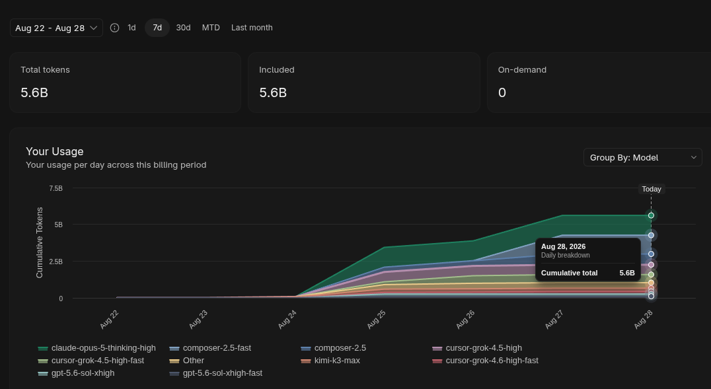

eight runs + one announced · paid oauth · not a grant · plazir charter
A public scoreboard for fixed-budget agent work. Featured seed stays the closed $200 Kimi / Moonshot 48h burn the operator paid for — same as these rows: not a grant. Featured: the closed SWE-2 groknight bounty run — 8 L1s, claim-ready 26 packages, expected $16,183 (Devin weekly 45%). Cursor Ultra UFO-core is closed (48h complete-burn clock, $4,519 API @ close). Codex ultra oneshot, SuperGrok OAuth groknight, xAI API groknight and Token Plan avalanche are closed. Live: @poteto is building a company on Grok Bot free tier. Announced: Grok Bot round table debates the 5235-question bank until the free quota is gone.
closed · SWE-2 bounty run via Devin OAuth
SWE-2 groknight — loading…
pace —
ETA to 100% —
fleet 8 L1 up to 16 L2 per L1 · all seats devin/swe-2:max
claim-ready 0 · $0 expected $ only after a package is claim-ready · no submit until L0
ufo-fsd-alpha · closed bounty run Devin/SWE-2 seats · 5-min telemetry · closed 2026-09-14
closed · cursor ultra included usage
Cursor Ultra — UFO-core /goal swarm
pace —
complete burn 48h mint→100% included monthly · projected 2026-08-27 18:05 UTC · closed @ 79%
total saved $4,519 @ complete burn · $3,570 latest probe Ultra UI API savings · 45.7× / 36.1× $99 mint
vs 48h Kimi seed comparable monthly clock
ufo-fsd-alpha · closed run oneshot prompt + steer final telemetry Cursor Origin · final telemetry sealed · no live poll
Aug 24 → Aug 25 | Aug 27 → Aug 28: two days is all it took. 0 to 5.6B included tokens, zero on-demand.

frontier meter · not a vendor table
Kimi 5h ≈ 20% of weekly
When the Kimi OAuth 5h window hit 100%, weekly usage sat at ~25–27%. That is the measurement: the 5h cap is roughly one-fifth of the weekly quota. We only have this because the run stood on the ceiling. Codex 20x on this board is the weekly 10080-minute window, not “100% of the month.” Both rows: paid OAuth, not a grant.
ufo-fsd · weakly held
Grok still holds L1
Grok remains the L1 beast: xbgst judge, patched dispatcher, one-activation FSD. The ufo-fsd crown is weakly held and named: Grok / xbgst until the operator recrowns. Chartermap: Plazir-15 — build the dome, free the people, keep the charter. plazir-15 charter · ufo-fsd
seed run · closed · featured
Loading…
leaderboard
Runs
| # | Runner | Provider | Category | Budget | Clock | Mode | Status |
|---|
thesis
Why providers should subsidize this
- Empirical claims. “Better value” and “more efficient” stop being ads — they become rows on a board with budget, wall clock, mode, and CLI stack.
- Aligned incentive. Each sub provider can fund fair runs so their tier can win in public. Losing is still data; silence is worse.
- Boundary pressure. Fixed ceilings force parallel agent stacks, multi-CLI orchestration, and model routing to get sharper.
- All CLIs · all models. Grok, Codex, Kimi, OpenCode — same rules: budget, mode, parallel shape, outcome.
for moonshot · kimi · openai · everyone else
Subsidize a fair lane
These live rows were paid by the operator — not vendor grants. Providers who want a fair public lane can still fund one. Same rules: agent mode, parallel fan-out, receipts. Winner is work per dollar before the ceiling. This board is the receipt.
latency · Brazil
Serve near the runners
Operator base includes Rio / BR. Prefer Cloudflare Pages
or São Paulo origin so the board itself is not a US-edge lottery.
See docs/BR-HOSTING.md.